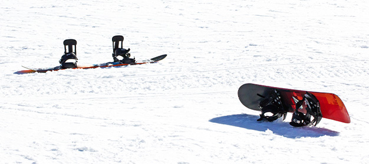
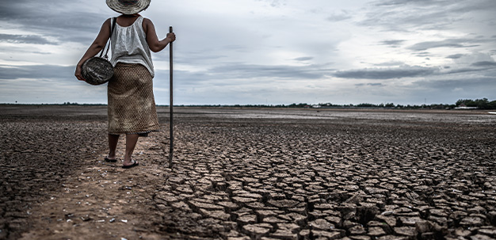
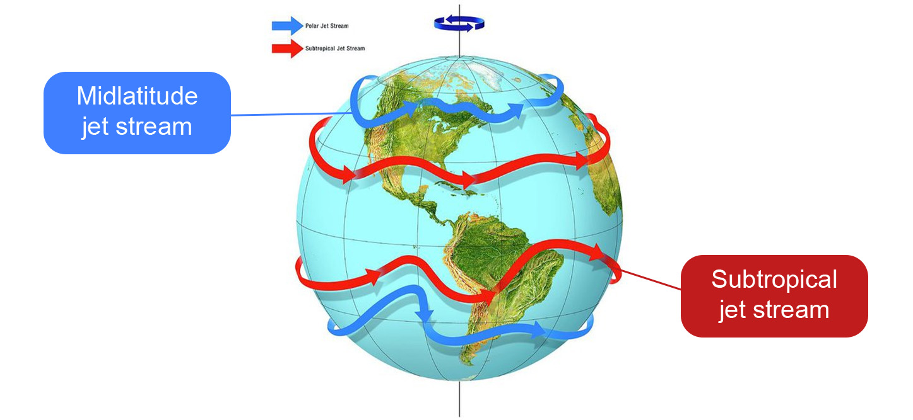
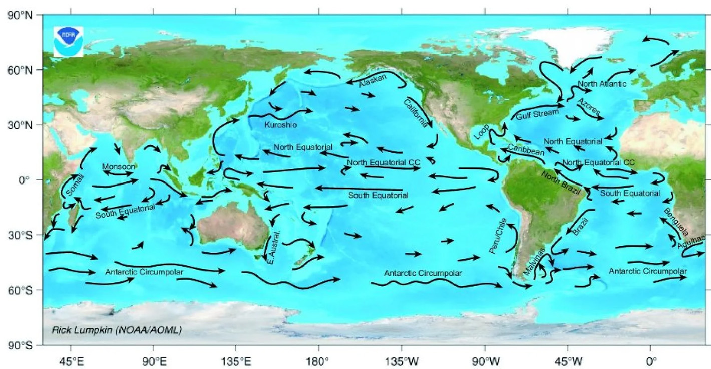
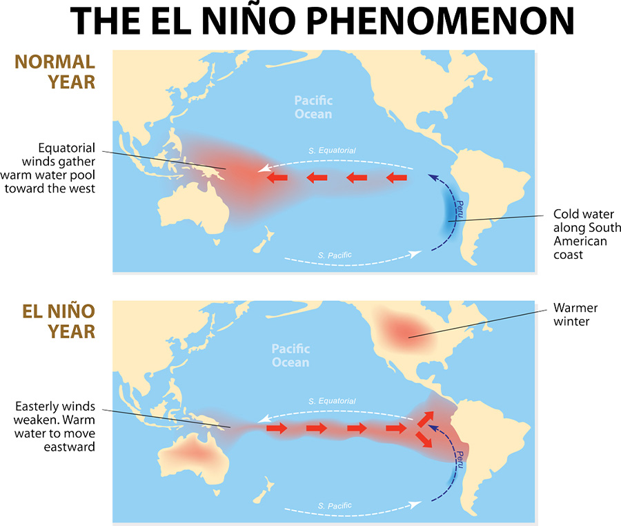

Environmental Science:
ATMOSPHERIC
CIRCULATION
What You Should Know:
Before you begin, you should:
- Understand how light interacts with objects.
- Understand reflection.
- Understand refraction..
- Understand absorption.
- Understand the properties and components of the Electromagnetic Spectrum.
Lesson expectations:
By the end of this lesson, you should be able to:
- Describe the relationship between latitude and the amount of solar energy that strikes an area.
- Explain how the imbalance of heat between low and high latitude areas drives atmospheric circulation and ocean currents.
- Describe how the Coriolis Effect causes a change in the direction of motion.
- Examine the relationship between global wind belts, jet streams, and the global patterns of ocean currents.
- Describe El Nino and some weather events associated with it.
Notes
- Why is the topic of weather such a common part of our everyday interactions?
- What affects the weather in different geographical locations, such as coastal areas, mountains regions, deserts areas, or arctic/Antarctic regions?
LESSON EXPECTATIONS
- Albedo
- Convection Current
- Coriolis effect
- El Niño
- Jet streams
- Latitude
- Ocean currents
- Trade winds
- Westerlies
Tornadoes
Tornadic extreme weather is not an escape but a great concern and a time to take warning. If you ever watch the news in the late summer and early fall, you often hear of extreme weather conditions like tornadoes and hurricanes. These atmospheric conditions highlight the fact that the atmosphere is in constant motion, which can lead to catastrophic weather patterns. This lesson is dedicated to learning what factors contribute to the Earth’s atmosphere.

Tornadoes can form when warm and humid air currents collide with colder, dryer air.
EARTH’S RADIATION BALANCE
Solar energy travels through space and enters the top of Earth’s atmosphere as visible and ultra violet (UV) light. The diagram shows you the fate of incoming solar energy. Further explanation of the diagram can be seen below.

1. About 50 percent of the solar energy reaches Earth’s surface; while the remaining 50 percent is absorbed by clouds, reflected back to space by clouds, or scattered in the atmosphere.
2. Of the 50 percent of solar energy that reaches Earth’s surface approximately 3 percent of it is reflected back to the atmosphere, while the remaining 47 percent is absorbed by water and land.
The amount of solar radiation that the Earth commonly receives is called its energy budget. Scientists hypothesize that if the polar ice caps melt due to a surplus of the Earth’s energy budget, less of the sun’s energy will be reflected back into space. The melting of the ice caps will cause an increase in the amount of solar energy the Earth can absorb.
ACTIVITY 1
Select the correct option.
What do you think will happen to the Earth’s climate if more solar radiation is absorbed by the Earth’s surface?
The graphic below will help you to understand where visible light and ultraviolet light fit into the huge electromagnetic spectrum. Many people do not realize that when they turn on the radio or the TV that they are receiving electromagnetic waves, only at a different frequency than say our eyes receive. Check out the huge spectrum below. Notice where FM radio and UHF TV channels fall in the spectrum. But, it is all electromagnetic waves. The energy that hits our planet from the sun covers a wide spectrum. The sun even radiates radio waves at lower frequencies. However, it is the energy from the visible and ultraviolet frequencies that warm the planet the most.

The Entire Electromagnetic Spectrum from A.M. Radio through Short Wave, VHF, UHF, Microwaves, Visible light, Ultraviolet Light, X-Rays and finally Gamma Rays.
RADIATION BALANCE
Imagine you have a money jar on your desk. Every morning you add 100 pennies to the jar (energy absorbed), and everyday you later take out 53 pennies to spend (energy reflected back into space). So that leaves you with 47 pennies (or 47 percent of your original incoming money) at the end of every day. If you did this every day for one year all those left behind pennies would really add up. You would have 17,155 pennies (or $171.55). If you did this everyday for 10 years you would have 171,550 pennies (or $1715.50).

Fortunately, Earth’s radiation balance works to keep all that absorbed solar radiation from building up. Most of it is converted to heat and emitted back to space eventually. This keeps Earth’s radiation balance close to equilibrium. As long as incoming solar energy equals the amount of energy leaving the Earth, things stay essentially unchanged — or balanced.

LATITUDE
Earth’s radiation budget as a whole is well balanced. However, the radiation budget does vary by location on Earth. Places closest to the equator receive more solar radiation than the areas near the poles. As discussed in Lesson 5, the distance north or south of the equator is measured by latitude . For reference, the equator has a latitude of zero and the poles are at 90° North and 90° South latitudes.
The three main reasons that solar radiation varies between the poles and the equator can be seen in the illustration.
Solar Radiation at the Poles

Latitude: a measure of distance from the equator, either north or south, on the globe.
Much of the sunlight that comes to Earth is reflected back to space or absorbed by clouds. That which is absorbed by land and air is eventually converted to heat and emitted back to space. This keeps Earth’s radiation budget in balance as a whole.
Albedo
Albedo is a measure of the amount of light that a surface reflects. Different types of surfaces will reflect different amounts of light. For instance, you may have heard that you should wear a white shirt when you go outside on a hot, sunny day. The reason why the white shirt will keep you cooler than a dark shirt is because the white shirts is able to reflect more light than the dark shirt. When you wear a dark shirt, more light energy is absorbed and as a result you feel much hotter. The white shirt has a higher albedo than the dark shirt.
Here are some albedo figures for various types of surfaces on Earth. Notice how much more light is reflected by snow than by forest cover, because the snow has a higher albedo than vegetation.
| Surface | % of light reflected |
|---|---|
| Fresh snow | 80-85 |
| Old Snow | 50-60 |
| Sand | 20-30 |
| Grass | 25-30 |
| Dry soil | 15-25 |
| Forest | 5-10 |
ATMOSPHERIC CIRCULATION
The uneven heating of the Earth between the poles and the equator is the driving force of atmospheric motions. You may have heard the term weather cell on the news or during the daily weather forecast. A weather cell that is referred to in the weather report generally describes a weather pattern other than the normal expected weather for a region. There are different kinds of standard weather cells, and these are what create weather and climate patterns.
An atmospheric cell is a parcel of air that moves in a circular motion. The cell moves as warm air rises, sinks as it cools, and rises as it warms, which cycles continuously throughout the day. On Earth, warm air from the equatorial regions rises and floats toward the poles. It has a lower air pressure than the cold air that moves in under it. As the warm low-pressure air travels, it cools and eventually becomes dense enough to sink. When it reaches Earth’s surface, it is pulled back toward the equator and warms as it goes. Once at the equator, the cycle starts over and the air’s journey begins again. This movement of air between warm and cold areas is called convection current.
Convection current:
Any air current that is caused by the transfer of heat in the atmosphere.
THE CORIOLIS EFFECT
Another factor that influences the movement of air between the poles and the tropic is the fact that the Earth spins on its axis. The axis is an imaginary line that runs through the North pole, the equator, and the South pole. The spinning of the axis gives rise to the Coriolis effect , which is the observation that air at Earth’s poles tends to move due to the Earth’s rotation. Air from the northern hemisphere appears to veer to the right, and air in the southern hemisphere appears to veer to the left. What is the Coriolis Effect?

DRAG AND DROP
Instructions: relate the surface to its percentage of reflection, remember that they are old snow, fresh snow, sand, grass, dry soil, forest.
| 20-30% |
|
| 80-85% |
|
| 25-30% |

|
| 15-25% |
|
| 5-10% |

|
| 50-65% |
|
CORIOLIS EFFECT
GLOBAL WIND BELTS
You have already learned that the temperature and pressure differences and the Coriolis effect modify the global circulation of the atmosphere. They create global wind patterns that are recognizable and predictable. This map shows the locations of trade winds and westerlies . Trade winds are the movements of air from subtropical areas just north and south of the equator back toward the equator. They move in response to pressure differences. It is important to recognize that the trade winds are named for the direction from which they blow. The warm equatorial air has a lower air pressure than the subtropical air, and air molecules will always move from higher pressure to lower pressure areas.
In the U.S., the prevailing winds generally come from the west and blow east; they are called westerlies. You learned about the Ferrel and Polar cells and the significance of degrees of latitude. These weather cells occur because the cool air near the poles moves toward the equator to be warmed and to replace the warm air that is continuously rising at the equator. The westerlies are winds that blow from high-pressure areas at about North and South 30° latitudes to low-pressure areas at about North and South 60° latitudes.
Before the days of engines and powerboats, sailors relied on trade winds to move them from place to place. Why are the trade winds still important today? When the trade winds from both hemispheres encounter one other, a confluence region forms. What happens at this point?
Sailors relied on trade winds to dictate their routes.
Equatorial regions have a surplus of solar energy; the polar regions have a deficit of polar energy.
INTERESTING FACTS ABOUT WINDS
Wind Sock
Wind is the movement of air, caused by the uneven heating of the Earth by the sun and the Earth's own rotation. Winds range from light breezes to natural hazards such as hurricanes and tornadoes. Wind socks, like this one near Crissy Field, San Francisco, California, indicate the relative speed and direction of the wind in a specific place.
Prevailing Winds
Winds occur where high-pressure air masses seek low-pressure areas. Prevailing winds are largely predictable and named for broad areas of the Earth over which they form.
El Niño
Dramatic waves during a Pacific Ocean storm.
Salt Bed Dunes
Sand dunes form on ancient salt beds in Baja California, Mexico. Wind erosion moves the sand dunes across the landscape. The curving dunes "point" the way the wind is blowing.
U.S. Winds
Winds are measured by their strength, barometric pressure, and the way they interact with precipitation. This map displays one way of measuring wind—wind speed—calculated across the continental United States over a period of one month (September 2012).
Sahara Dust Layer
A gust of wind can quickly blow through a small area, and strong winds can carry debris such as volcanic ash or dust across an entire continent or ocean. Here, a plume of dust from the Sahara sweeps across the entire Atlantic Ocean. This phenomenon is so frequent that it is nicknamed the region's "Sahara dust layer.
Cyclone Ingrid
In the Southern Hemisphere, winds pass from high-pressure systems to low-pressure systems on the left. This makes storms, such as Cyclone Ingrid, storming across northern Australia above, appear to swirl in a clockwise direction.
Hurricane Katrina
In the Northern Hemisphere, winds pass from high-pressure systems to low-pressure systems on the right. This makes storms, such as Hurricane Katrina, above, appear to swirl counter-clockwise.
Monsoon Illustration
A monsoon is a seasonal change in the strongest, or prevailing winds of a region. Southeast Asia experiences two monsoon seasons. The first, pictured in the large globe, brings moisture-filled clouds from the Indian Ocean. The second monsoon, pictured on the smaller globe to the right, brings cooler, dry air from eastern Asia and the Himalayan region.
Rain Shadow
Winds have a huge impact on a region's climate. Rain shadows, for instance, are created as moisture-laden wind approaches a mountain range. The moisture condenses as rain and other precipitation before coming over the crest of the mountain. Dry "downslope winds" mark the other side of the mountain. Hawaii's "Big Island," dominated by the peaks of Kohala and Mauna Kea, dramatically illustrates the landscape and climate of a rain shadow.
Bisoon in a Blizzard
Organisms have adapted to windy conditions. These bison's thick fur and group behavior (huddling for warmth) help protect them against blizzards and other cold winter winds.
Neptune
Neptune, named for the Greek god of the sea, is not blue due to the presence of water. Neptune's blue clouds are mostly made of methane. Neptune is the only planet in the solar system that cannot be seen without a telescope.
Mount Everest
A cloud of snow blows from the summit of Mt. Everest, Nepal, the highest spot on Earth.
Air moves globally in atmospheric cells in response to temperature and pressure differences. In general, air circulates from low pressure warm equatorial areas to high pressure cool polar areas.
JET STREAMS
Another type of atmospheric circulation is the jet stream which is a high-speed current of air that forms when there are great temperature differences between adjacent atmospheric cells. Jet streams can travel faster than 115 miles per hour and can be thousands of miles long. Airplane travel times between the same destinations can be different depending on the direction they are going. In one direction the plane is traveling against the jet stream, which makes the travel time longer, and in the other direction the plane is going with the jet stream, which makes the travel time shorter. Each hemisphere has a subtropical jet stream and a polar jet stream.
At the transitions of jet streams, the weather is often stormy. Thunderstorms and tornadoes can also develop as a result of the effects of jet streams. A polar jet stream pushes cold, dry air south, while a subtropical jet stream pushes warm, moist air to the north. The collision of the two air masses is a recipe for disaster because of the weather conditions that result from different temperature air masses like major storms, so weather forecasters pay close attention to moving jet streams to help them predict the weather.
Jet Streams: Fast-moving currents of air at high altitudes.
Ocean Currents
An ocean current is a steady flow of surface ocean water in a definite path. Ocean currents are driven by wind, and there are several identifiable surface ocean currents, as seen on the map
A map of global ocean current patterns looks much like the maps you have seen already in this lesson on global atmospheric circulation. Ocean currents are very similar to air currents. Like the atmosphere, ocean currents are affected by the Coriolis effect; they turn to the right in the Northern Hemisphere and to the left in the Southern Hemisphere. They are also influenced by contrasting amounts of solar radiation at various places on the globe; ocean currents that flow from the equator are warm, while those that flow from the poles are cold. Surface ocean currents travel along the edges of continents until they meet another current flowing in an opposite direction. The result is that surface currents travel in loops called gyres, which rotate clockwise in the Northern Hemisphere and counterclockwise in the Southern Hemisphere.

Ocean currents: movement of surface ocean water in predictable paths.
How do Ocean currents work?
ALL ABOUT OCEAN GYRES
Ocean Gyres
Icebergs form over this ocean gyre in the North Atlantic Ocean, near the southeastern coast of Greenland. Wind patterns and the rotation of Earth cause spiral or circular currents to form in the ocean. These currents are called gyres.

Ocean currents
Ocean gyres are large system of circular ocean currents formed by global wind patterns and forces created by Earth’s rotation. The five major circulation patterns formed by the currents on this map are the world's five major ocean gyres: North Atlantic, South Atlantic, Indian, North Pacific, and South Pacific. (The Indian Ocean Gyre is actually two, split slightly below the Equator.)
Ocean Conveyor Belt
Ekman Spiral
Beneath surface currents of the gyre, the Coriolis effect results in what is called an Ekman spiral. While surface currents are deflected by about 45 degrees, each deeper layer in the water column is deflected slightly less. This results in a spiral pattern descending about 100 meters (330 feet).
Indian Ocean Gyres
Tropical gyres form near the Equator and flow in a more east-west pattern than other gyres. The wind-driven equatorial currents in the Indian Ocean Gyre actually are actually two different gyres—which can change direction depending on the powerful monsoon.
Garbage Patches
Garbage patches are found in the calm, stable centers of many of the world's ocean gyres. Even smaller bodies of water, such as the Mediterranean and North Seas, are developing their own garbage patches along heavily trafficked shipping lanes.
North Atlantic Gyre
The North Atlantic Gyre is one of the five major ocean gyres—the others are the South Atlantic Gyre, the Indian Ocean Gyre, the North Pacific Gyre, and the South Pacific Gyre. The North Atlantic Gyre contains both cold (depicted in blue) and warm (depicted in red) currents.
Great Pacific Garbage Patch
The Great Pacific Garbage Patch is a collection of marine debris in the North Pacific Ocean. Also known as the Pacific trash vortex, the garbage patch is actually two distinct collections of debris bounded by the massive North Pacific Subtropical Gyre.

Plankton
Ocean gyres are often considered oligotrophic, or nutrient-poor, regions. Oceanographers sometimes estimate the biological activity in a gyre by measuring the presence of phytoplankton—such as this lovely specimen.
Currents
When the Equatorial current hits the Americas, it turns north and becomes the Gulf Stream current. The Gulf Stream current is large and quick-moving. It is made of warm water and raises air temperatures as it moves northward along the east coast of the United States. Along southeastern Canada, the Gulf Stream swings away from North America and heads east toward Europe. Europe acts as a barrier to the current. Since it can’t go through the land, it divides in half. One part of it continues northward; the other half heads back toward the equator. The part that heads north takes relatively warm water to the northern latitudes along Britain and Norway. This gives northern Europe a milder climate than some other parts of the world with similar latitudes. If England did not have the influence of the Gulf Stream’s warm waters, it would have much more snow than rain and would be a generally colder place.
EL NIÑO
Our final example of atmospheric circulation is one of the most famous atmospheric phenomenons, El Niño. El Niño is a wind current that results from unusual movements of atmospheric winds and ocean currents. Because of the unusual conditions it produces, El Niño can cause extreme weather.
El Niño is a weather phenomenon that occurs in the Pacific Ocean. It results in weaker winds and warmer sea temperatures.
ASSIGNMENT 1:
ATMOSPHERIC CIRCULATION.
Instructions: Fill in the space with the answer that you consider correct, are some concepts already seen in the lesson
-
___________describes the impact of Earth’s rotation on the movement of air.
The coriolis effectEl NiñoThe ocean currents -
___________persistent winds that blow from the subtropics toward the equator.
Trade windsWesterliesGarbage Patch -
___________west to east winds that dominate the middle latitudes of both hemispheres on Earth.
Trade windsWesterliesGarbage Patch -
____________have a surplus of solar energy; the polar regions have a deficit of polar energy.
Trade windsEquatorial RegionsGarbage Patch -
____________fast-moving currents of air at high altitudes.
The coriolis effectEl NiñoJet Streams
|
Answer the following questions.
|